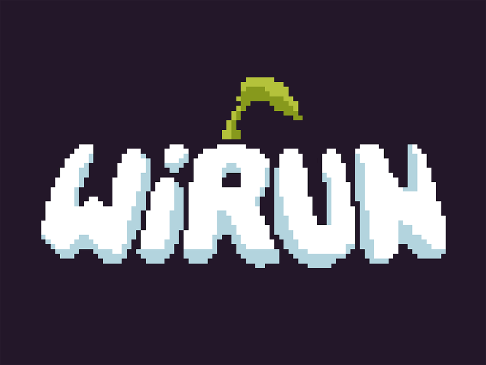
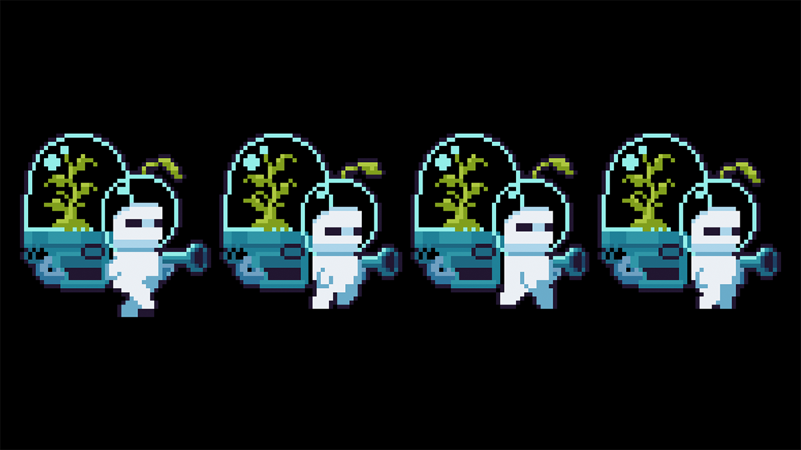
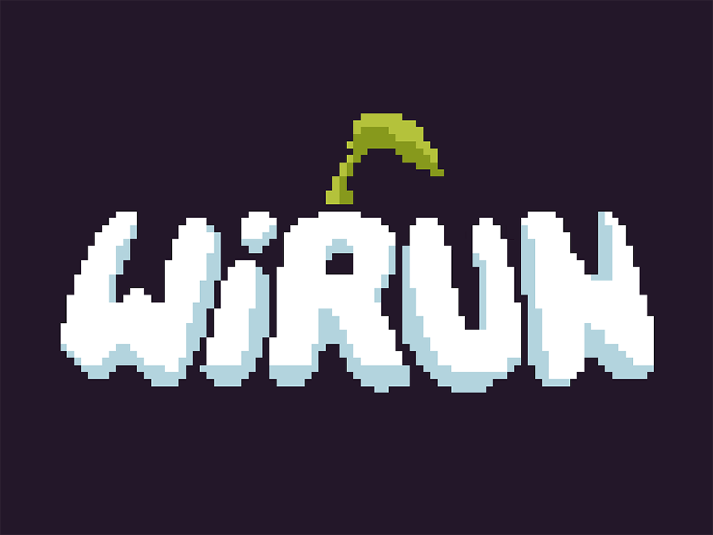
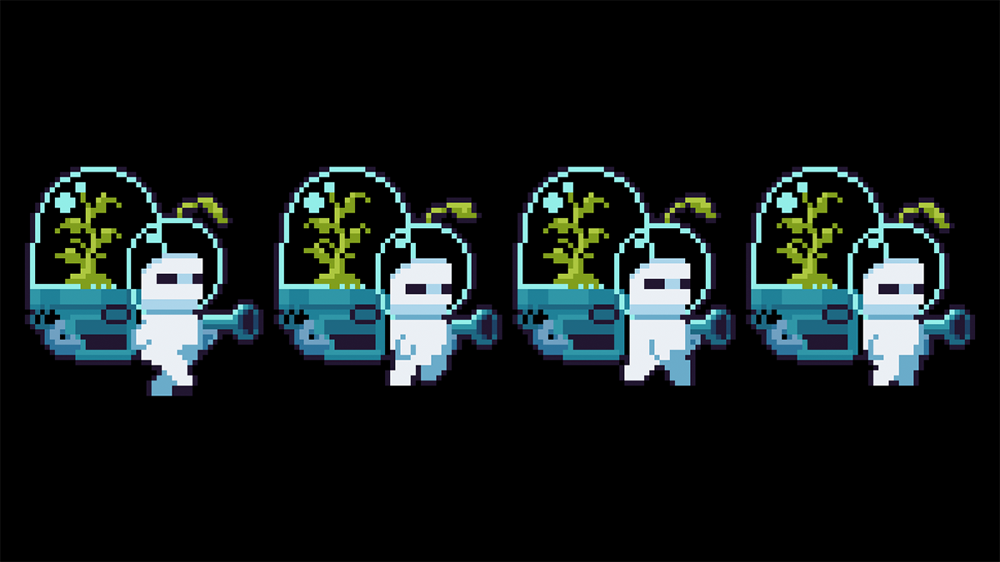

wirun
A science education and outreach project based on research conducted at the Coastal Marine Research Station. It takes the form of a platformer video game designed to teach players about macroalgae and their ecosystems through tangential learning—where knowledge is acquired naturally as players engage with the game world. By taking an active role, players discover the implicit rules of the environment and learn through exploration, experimentation, and progression.
 


